Full design for AntSeed: an open peer-to-peer market for AI inference. Brand identity, a macOS desktop app, the marketing site, and a motion system. The whole product had to survive being explained in the four seconds before someone closes the tab.
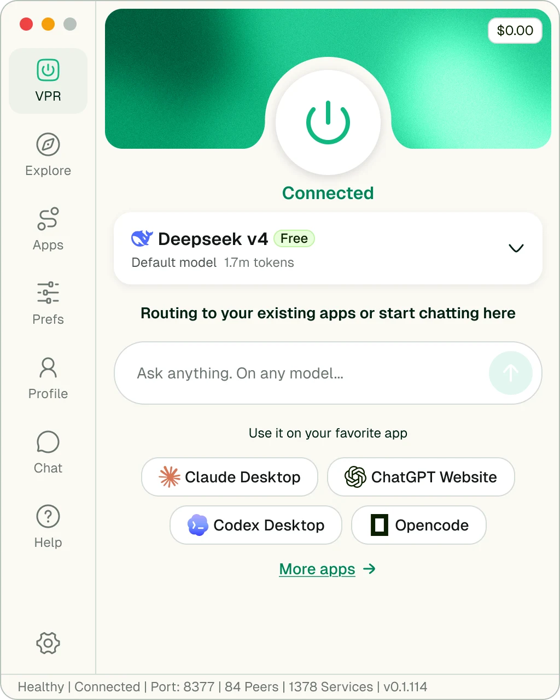
AntSeed moves AI requests the way BitTorrent moves files. Providers set their own prices and announce capacity on a peer-to-peer network. Buyers route by price, latency, reputation, or privacy. There is no aggregator taking a cut and no account to create.
The engineering was already real: a DHT, a routing protocol, on-chain settlement, provider plugins. What did not exist was any way for a normal person to want it. The ask was everything on the outside of the protocol: the mark, the desktop app, the site, and the films that introduce it.
The constraint that shaped every decision: the audience splits in two. Developers who will read the protocol docs and judge it on architecture, and people who just want their coding agent to cost less and keep working. One surface had to serve both without patronising either.
The mark is an ant whose legs terminate in nodes. It is already a graph, which is what let the same shape carry the brand, the app icon, and the particle field in the films.
Decentralized products inherit a visual language of dashboards, node graphs, and dark terminals. It signals "infrastructure" to engineers and "not for me" to everyone else. Before drawing anything I mapped where the product actually loses people.
Nothing about the value is visible. Routing happens in milliseconds, on a network the user never sees, through providers they never meet. The saving is real but arrives as an absence: a bill that did not grow.
The mental model is also borrowed from the wrong place. "Peer-to-peer" and "on-chain settlement" set an expectation of configuration, wallets, and risk. Meanwhile the actual job is mundane: point your existing tools somewhere cheaper and carry on.
Anchor the entire product to a single physical control. The VPR opens on a power button the size of a fist, and everything else in the app is subordinate to it. On or off. Connected or not. A user who understands nothing else understands that.
Then show the money at the exact moment it is earned. Every model row carries the official price struck through against the live market price, so the saving is a number on screen rather than a claim in a headline.
Warm paper, not black glass. The app sits on the same off-white as a text editor, with green reserved for state that is genuinely live.
The Virtual Private Router is the product you actually hold: a self-hosted macOS app that exposes an OpenAI and Anthropic compatible endpoint on localhost and routes every request across the open market. Ten screens covering five views and their states, held to one fixed sidebar.
The app opens on a power control and a single word of state. Everything below it, the default model, the prompt field, the connected apps, is optional detail. The button is deliberately larger than any interface guideline would suggest, because its size is the message.
The status bar never lies about the network: healthy, port, live peer count, service count, build. It is the one place the protocol is allowed to speak in its own language.
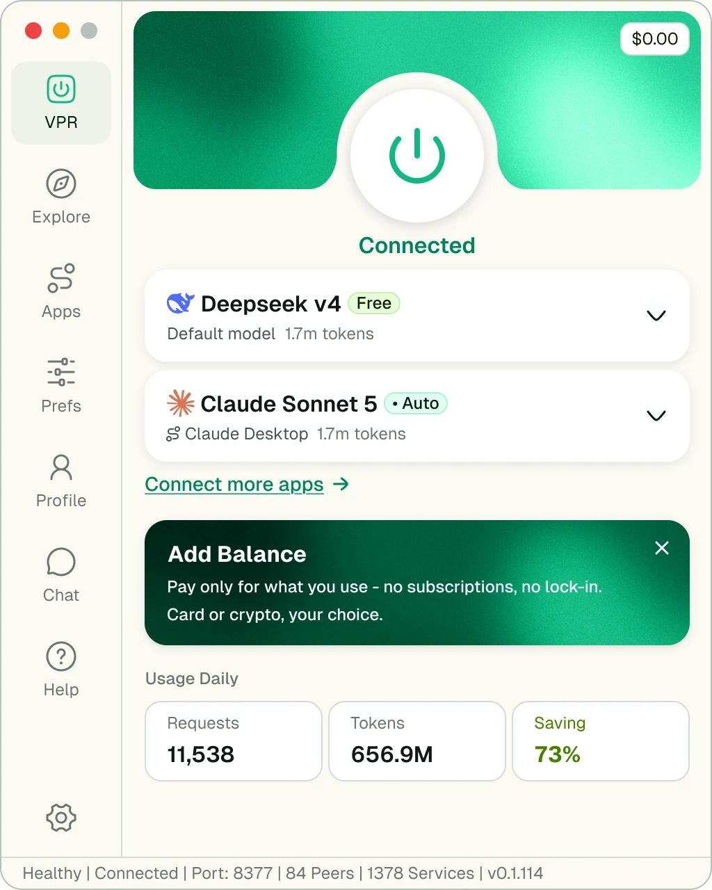
Once traffic is flowing the same screen grows a second model row and a three-cell usage strip: requests, tokens, saving. Saving is the only figure rendered in green, because it is the only one that answers why the app is open.
The strip appears rather than reserving empty space. A dashboard full of zeroes on first run is a promise the product has not kept yet.
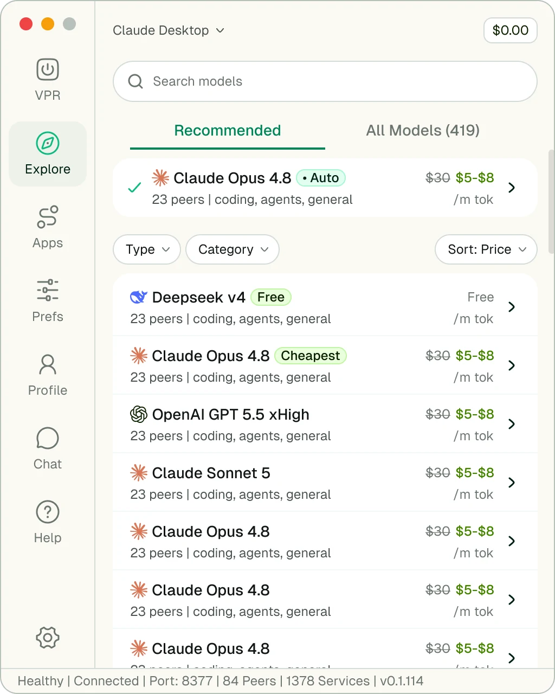
Hundreds of models across independent providers, which is a filtering problem before it is a browsing problem. Recommended comes first and All Models sits behind a tab, so the default view is a short list rather than an inventory.
Each row carries the same four facts in the same order: model, peer count, capability tags, and the official price struck through against the live band. Badges do the ranking work in one word, Cheapest, Auto, Free, so the eye never has to compare two numbers to find the point.
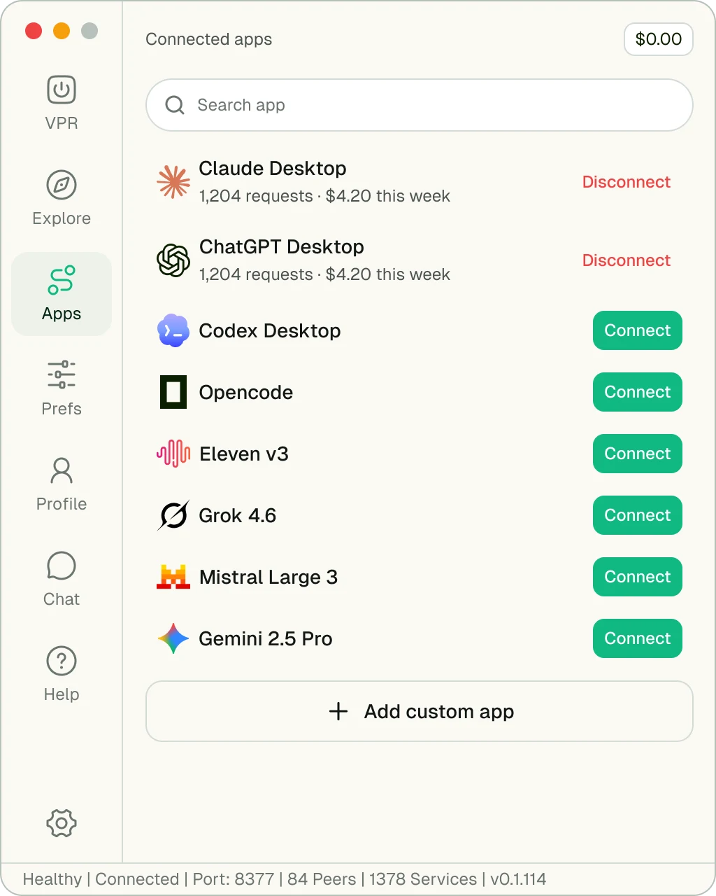
The strongest thing AntSeed can say is that nothing changes. Claude Desktop, Codex, Opencode, the ChatGPT site: each is one Connect button, and connected rows report their own request count and weekly spend so the cost lands next to the thing that caused it.
Disconnect is set in red and left permanently visible rather than hidden behind an overflow menu. On software that sits between a user and their paid tools, the exit has to be as obvious as the entrance.
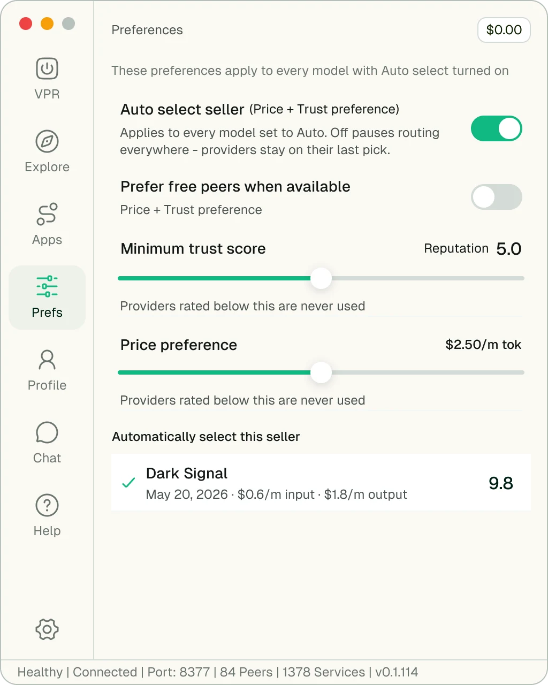
Auto-routing means a stranger's machine answers your prompt. The preferences screen is where that gets bounded: a minimum trust score, a price ceiling, and an explicit opt-in for free peers.
Every control states its consequence in the line underneath it, including what happens when it is switched off. Two sliders and two toggles is the entire surface, because a routing policy that needs a manual is a routing policy nobody sets.
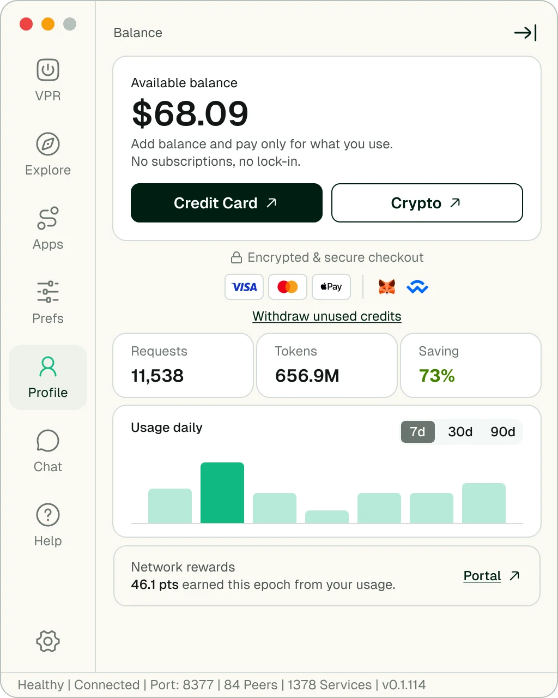
Settlement is on-chain and non-custodial, which is exactly the sentence that loses a mainstream user. So the screen leads with a dollar balance and puts Credit Card first, with Crypto beside it as a peer rather than a prerequisite.
Withdraw unused credits is stated in plain words directly under the payment methods. On a prepaid balance, the fastest way to earn the first top-up is to show how the money gets back out.
antseed.com is not a feature list. It is a sequence: cheaper, then private, then unownable, then already compatible with what you use. Each section only exists because the one before it raised a question.
The page opens on the product rather than an illustration of the idea. The VPR sits at the centre of a dot field that resolves into the ant mark, so the first thing a visitor sees is the software they are being asked to download, with the network drawn behind it rather than instead of it.
Objections are answered in the order they occur. Price first, because that is why anyone clicked. Privacy second, because "peer-to-peer" immediately raises it. Ownership third, for the reader who now wants to know who is really in charge. Only then the compatibility argument, which is the one that actually closes.
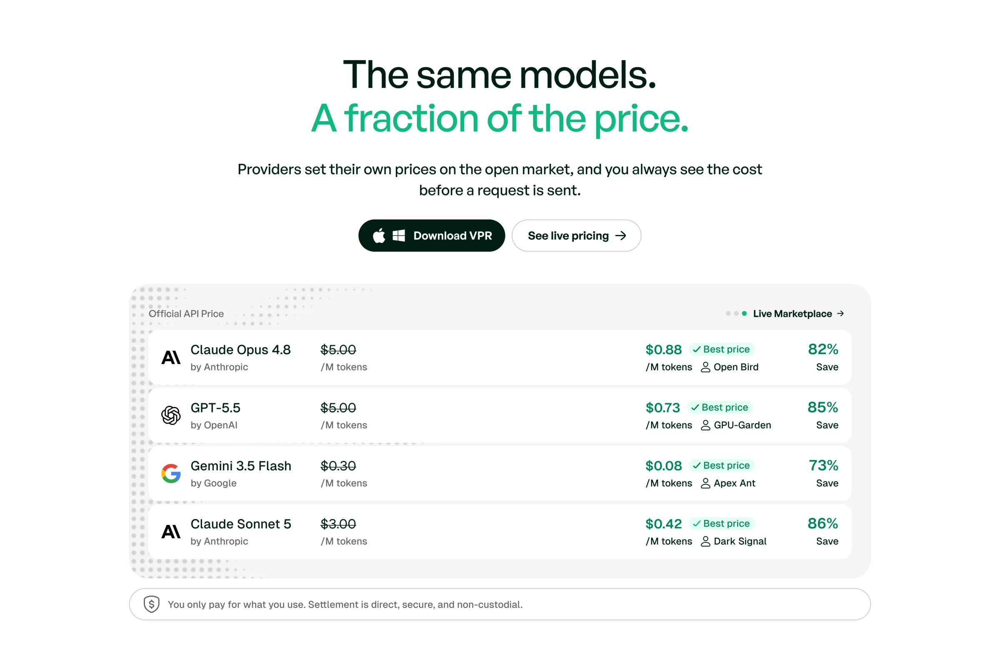
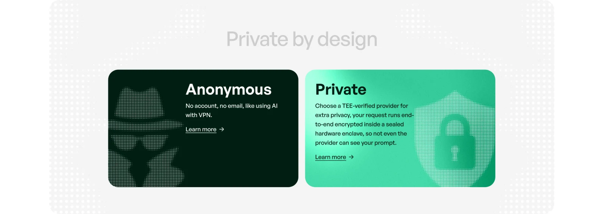
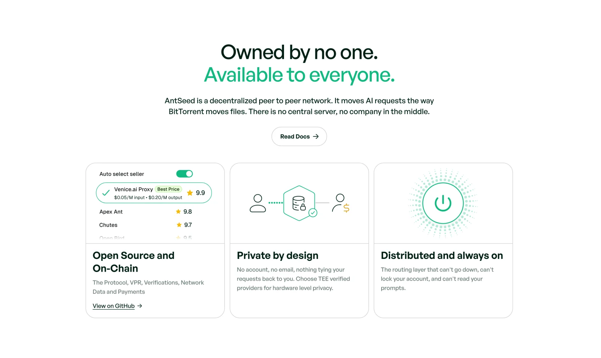
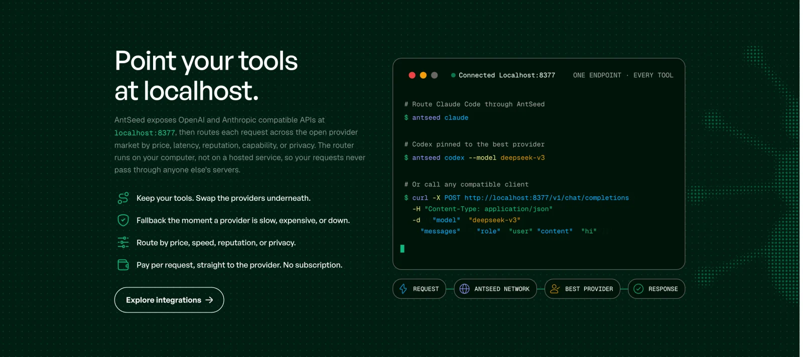
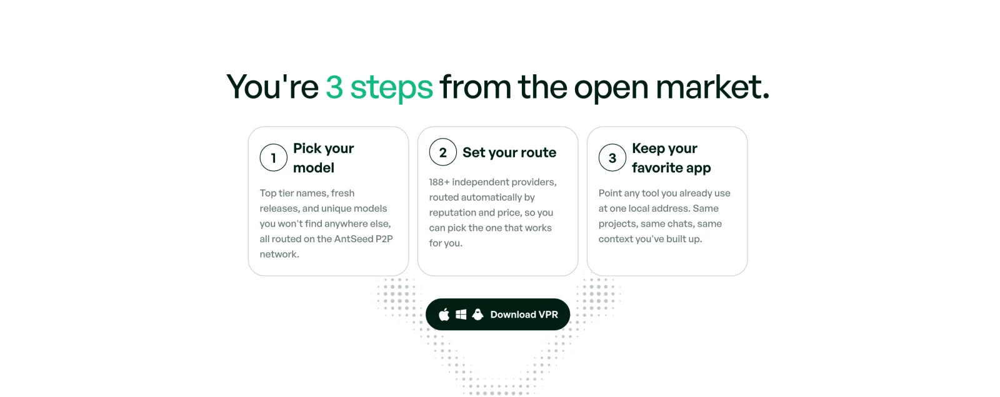
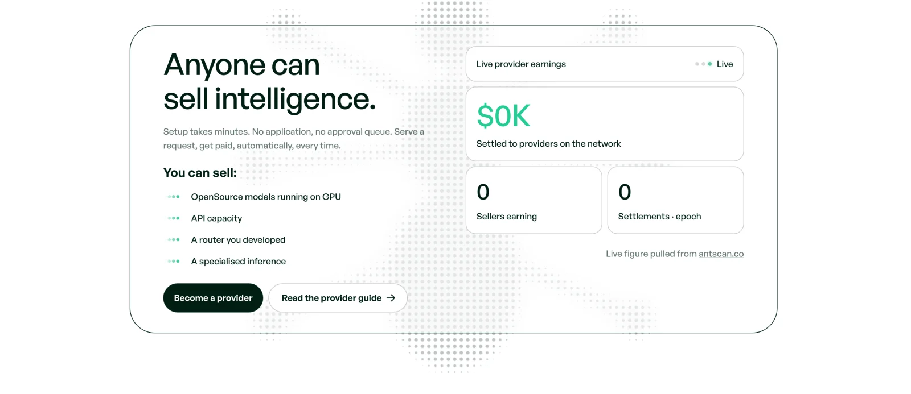
Three films, built in After Effects and Remotion. The brief for all of them was the same: show a mesh of strangers' machines becoming one product, without ever drawing a literal diagram of it.
Six seconds. The user presses the button, a wave travels out through a lattice of unlit cells, and the cells that fall inside the ant mark stay lit while the rest settle back down. The network wakes up and resolves into the brand in a single gesture.
Two rewrites got it there. The first version threw particles outward, which reads as a starfield rather than a network. The second faded the logo in on a timer, which made the mark feel pasted on top. The version here builds the ant out of the wave itself: the logo is always present in the source and the wavefront simply uncovers it.
The button never moves. It holds frame centre for the entire film and only scales, so there is exactly one focal point at the payoff.
Two roulettes spin either side of the VPR, providers on the left and live peers on the right, and both land at once: the model the user asked for, matched to the cheapest peer serving it. The last frame reproduces the comp exactly, so the film ends on the product rather than on an effect.
Built in Remotion rather than After Effects. The piece is roughly 80% typography and UI state, prices, badges, ratings, ten-item lists, and that is work a compositor fights and a component tree does for free. Tempo is locked to 32 frames per beat at 60fps, so every subdivision lands on a whole frame.
The winning peer is the cheapest and rated 9.9, on purpose. A market that resolves to the cheapest option alone reads as a race to the bottom.
The loop at the top of this page. A prompt is typed into an ordinary chat window, the VPR routes it, the market answers, and the saving counts up beside it. One continuous canvas, no cuts, so the viewer never loses the thread between the thing they typed and the price they paid.
The VPR sits at the centre and everything else is arranged around it: the app on the left, the price on the right, the network underneath. The exit collapses inward toward the card rather than fading the whole frame at once, which keeps the loop point invisible and the hierarchy intact.
An ant colony is the oldest working example of a peer-to-peer system: no leader, no central plan, individually trivial and collectively capable. The identity takes that literally and never has to explain it.
Every leg terminates in a node. That single decision is what made the mark usable everywhere else: it is a graph before it is an illustration, so it can be halftoned into a particle field, rendered as an app icon at 16px, or scattered across a page as background texture and still read as itself.
The wordmark is set in a geometric grotesque with the counters left open and the letterforms flat. No gradient, no bevel, no chrome. In a category where every second brand reaches for a glowing hexagon, restraint is the position.
Green is rationed. It marks live state and nothing else: a connected router, a live price, a peer that answered. Everywhere the product is merely showing you something, it stays in ink on paper.
Void green as the ink, a single live green, one bright accent, one tint for badges. Four values carry the whole product.
Geist for everything the user reads, JetBrains Mono for anything the protocol says: ports, hashes, prices, peer counts.
One shape used as app hero, sidebar icon, favicon, and the origin of every wave in the films. The product's only true primitive.
A dot grid standing in for the peer network. Unlit by default, lit where something is happening. Site background, film substrate, and the texture behind the mark.
The one piece of richness in the system, reserved for the connected state at the top of the app. It appears when the router is on and nowhere else.
Pill badges for ranking, one filled button per view, full-radius throughout. Shared between the app and the site so a download feels like the same product.
The network is live and the numbers below are its own, not mine. What I can claim is the surface it meets people through.
The decision that paid for itself repeatedly was making the power button the product. It survived translation into a sidebar icon, a favicon, three films, and the site's hero, and it gave every later argument something concrete to attach to. When a system has one primitive, the rest of the work gets cheaper.
What I would change: I designed the model market before I understood how wide the price bands actually get across independent providers. The rows are built for a tidy struck-through comparison, and real peers are messier than that, with the same model quoted at four prices from four machines of different reliability. That surface wants a distribution, not a single figure, and it is the next thing I would rebuild.
The site is also still mid-flight. Sections are being staged in and out as the network's own numbers move, which is the correct behaviour for a product this early and an uncomfortable one for a designer who would like it to hold still.
Across five views of the VPR and their states
Sequenced as one argument, from price to compatibility
After Effects and Remotion, from mark to hero loop
Independent providers serving 610+ models
Network figures are the product's own, published live on antseed.com and sourced from antscan.co: 102B+ tokens processed and $220K+ settled to providers as of August 2026. They measure the network, not the design.